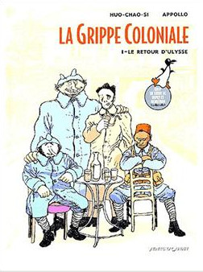
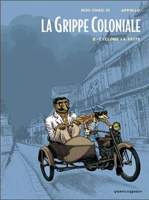
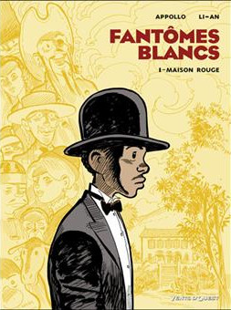
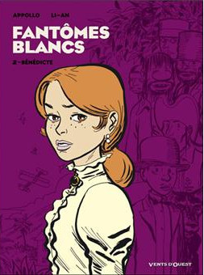

Il y a des hasards du calendrier qui font bien les choses. Le mois de février commence avec la clôture du festival de la BD d'Angoulême. Parallèlement, sans aucun effet d'aubaine, la Fnac sort son guide de la bande dessinée. En bon parisien interessé, je ne vais pas en Charente pour le festival mais je feuillette le guide et je constate que parmi les albums indispensables se trouve «la grippe coloniale» de Huo-Chao-Si et Appollo. Un album qui avait été primé à Angoulême l'année d'avant par le grand prix de la critique.
Cet album serait 100% réunionnais si son éditeur n'était pas parisien. L'histoire se déroule à la Réunion au moment du retour des poilus de la grande guerre. Les auteurs ne sont pas inconnus aussi puisque depuis 1986 il sévissaient sur l'île avec les autres membres du cri du margouillat.
C'est le site du margouillat que je voulais présenter depuis des années et que je présente aujourd'hui à l'occasion de ce hasard de calendrier. J'ai pu archiver quelques pages de cet ancien site qui ne paye peut être pas de mine sur le web aujourd'hui mais qui témoigne de la vitalité de ce groupe d'auteurs et de dessinateurs péï. Le cri du Margouillat est le premier magazine BD de l'île il est né en 1986. En juin 2002 il est devenu le Margouillat (tout court), un magazine qui parle aussi de politique et d'actualités avec toujours les mêmes personnes. Cette fine équipe faisait la promotion de la bande dessinée avec l'association Bande décidée et éditait même des albums de certains auteurs de l'île. Ma collection préférée est la collection bichique appelée ainsi pour la taille des albums (format strip).
Les auteurs de ces albums sont depuis montés à l'assaut de la métropole. Serge Huo-Chao-Si et Appollo chez vents d'ouest biensur, mais aussi Li-An chez Delcourt et Téhem chez Glénat, le dessinateur de la série Tiburce (un jeune réunionnais des hauts) a transposé son humour avec succès dans la série Malika Secouss (une beurette de la cité) qui est une des héroïne les plus en vue du magasine Tchô!.
Voilà donc que après les grands mythes, la littérature pour enfants, les réunionnais sont présent avec brio dans la bande dessinée. Le Margouillat a été une grande expérience riche en succès. Moi qui avait découvert le site il y a presque six ans grâce au site Pardon! Je regrette presque de ne pas l'avoir présenté plus tôt et après une si longue absence.
Mais aujourd'hui, si on tire un bilan du Margouillat, que de chemin parcouru ! Le Margouillat s'est éteind en décembre 2001 et le nom de domaine a été abandonné. Une édition spéciale gratuite a été distribuée à la Réunion au lendemain du 21 avril 2002 pour permettre aux auteurs de participer à la campagne contre le Pen. Un numéro mémorable qui fut hélas le dernier.
Nous souhaitons encore beaucoup d'albums réunionnais dans les bacs pour les années à venir.
 
{% fnac "margouillat1", "https://livre.fnac.com/a1446960/La-grippe-coloniale-Le-retour-d-Ulysse-Tome-01-La-Grippe-Coloniale-Appollo" %} {% fnac "margouillat2", "https://livre.fnac.com/a4035101/La-grippe-coloniale-Cyclone-la-Peste-Tome-02-La-Grippe-Coloniale-Appollo", "right" %}
 
{% fnac "margouillat3", "https://livre.fnac.com/a1679562/Fantomes-blancs-Maison-Rouge-Tome-01-Fantomes-Blancs-Appollo" %} {% fnac "margouillat4", "https://livre.fnac.com/a1848006/Fantomes-blancs-Benedicte-Tome-02-Fantomes-Blancs-Appollo", "right" %}